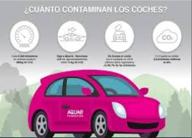

Campaña por la preservación de la naturaleza
Autor
2 days, 8 hours
Este año nos proponemos en el ayuntamiento de Zaragoza colabolar con la preservación de la naturaleza en la ciudad. Por ello
creemos interesante, si estás en edad de 12 a 17 años, que participes con nosotros en esta gran labor ciudadana de plantación
de árboles en las inmediaciones del barrio de Picarral, entre los días 10 y 20 de diciembre, para que, en unos años, podamos
volver y admirar nuestra obra. Además, Picarral es una de las zonas de mayor densidad industrial en la urbe. ¿A qué estás esperando? Únete, te esperamos
Zaragoza, objetivo 0 contaminación
Autor
2 days, 8 hours
Hoy en día los ciudadanos adquirimos más y más conciencia acerca de la importancia de preservar el entorno en el que vivimos. No obstante, parece que al vivir en la ciudad, eso se nos olvida, o no lo vemos como algo tan evidente como cuando vamos a pasar el fin de semana al monte. Sin embargo, nos afecta, y más de lo que creemos, ya que es en las ciudades donde mayor polución se acumula por metro cúbico. Por ese motivo, el ayuntamiento de Zaragoza con la colaboración de GreenPeace ha lanzado este año la propuesta "Zaragoza, objetivo 0 contaminación" en la que se pretende llegar en unos pocos años a ser una de las ciudades de España con mejor gestión de residuos y tratamiento de la polución ambiental. Estad atentos, ¡pronto surgirán campañas para todas las edades en las que podréis participar!

¿Cuánto contamina mi coche?
Autor
2 days, 8 hours
Estamos de enhorabuena, y es que nuestra calculadora de rutas es todo un éxito. SIn embargo, muchos de vosotros nos preguntáis cómo puede uno saber la tasa de polución de su coche. SI bien estamos trabajando en una base de datos con la que podréis obviar poner ese dato por vuestra cuenta, ya que os daremos una lista de modelos de cohe, hasta entonces os dejamos aquí unos trucos que os pueden ayudar:
- Google es vuestro amigo, lo sabe todo de todos (a veces incluso demasiado)
- El manual de tu guantera es un buen aliado
- Pásate por el concesionario...de paso quizá veas algún coche eléctrico interesante